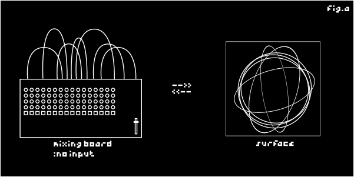

48y51r15 - a gaze in to the void 48y51r15 is a sonic-visual work exploring the intangibility of sound and self regulation system. Based on the practice of no-input mixing, the installation creates the linked dialogues between two domains of fluctuations. The installation invites the perticipants to adjust observe and find the position/space in between.

Past installed venues :: Bangkok Design Week 2025 Intact Festival 2024 ----------------------------------
"Gazing in to the void.. Are we finding ourselves? To the time in between to the space inbetween The unimaginable realm awaits Forms unfold right before our eyes and senses. Hope you are doing well." -CRSRCRSRRR for dad.
<-back